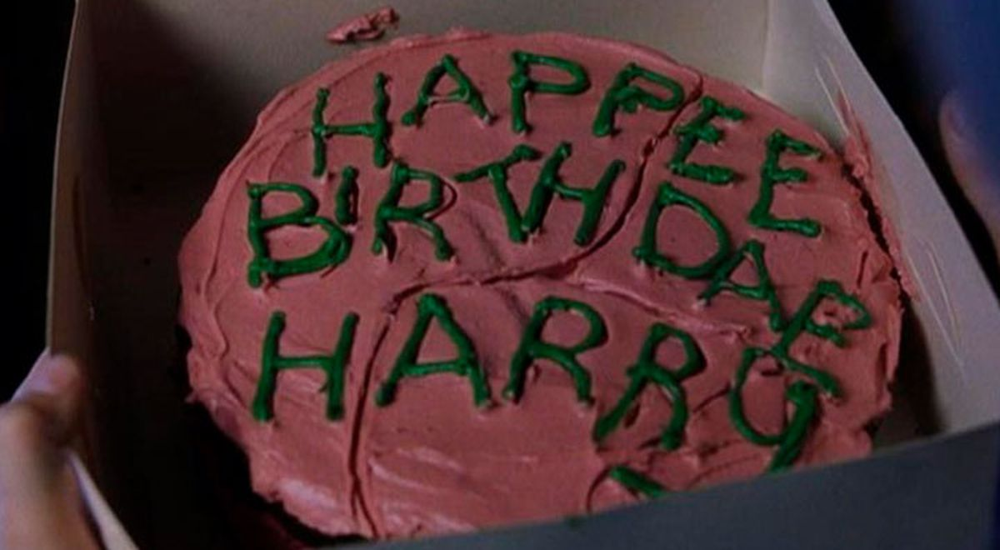

Esta receta cumpleaños Harry Potter (tarta) es muy fácil de hacer y seamos sinceros… Es parte fundamental del
mundo mágico, ¿Verdad?. El pastel sale maravillosamente bueno, no es extremadamente dulce, ni lo hace
empalagoso,así mismo es totalmente cremoso a la par que jodidamente bueno, ¿Empezamos?
Elegi esta porque aparece en mi saga favorita

Ingredientes Para El Pastel
75 Gramos azúcar
75 gramos Harina
1 cda polvo de hornear
1/2 cda Bicarbonato
1/2 cda sal
115 Gramos Mantequilla
1 cda Extracto de vainilla
2 Huevos
50 gramos Chocolate negro (Derretido)
Pasos
Precalentar el horno a 280º
Engrase y mezcle dos moldes redondos para pasteles
Combine los ingredientes secos en un tazón mezclador
Añadir la mantequilla, la leche y la vainilla.
Agregue los huevos y el chocolate y a Vatir
Vierta la masa en los moldes y hornee por 30-45 minutos
Enfríe 10 minutos en una sartén, luego a la nevera
Ingedientes para el glaseado
170 ml Mantequilla (temperatura ambiente)
60 gr Cacao en polvo
75 gr azúcar
Colorante rojo (2 gotas)
Colorante verde
Pasos
Agregue la mantequilla y el queso crema al bol para mezcla
Coloque el accesorio de la paleta y mezcla con la batidora hasta que esté bien mezclado.
Girar para revolver y agregar la mitad del azúcar en polvo y mezclar hasta que esté cremosa y suave.
Agregue la otra mitad del azúcar en polvo hasta que esté cremosa y suave.
Agrega una pequeña cantidad de colorante rojo para hacer que el glaseado sea rojizo
Una vez que el pastel se haya enfriado, agregue una pequeña cantidad de glaseado rosa entre las capas de
pastel y apílelos.
Cubre la parte superior y los lados del pastel con el glaseado rosa.
Esta receta fue copiada por la pagina:
https://magiayhechiceria.com/receta-cumpleanos-harry-potter/